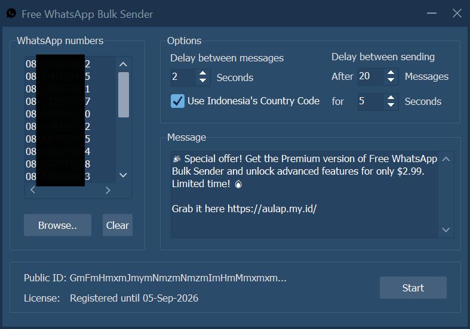

Pengiriman pesan berurutan melalui WhatsApp Desktop
Free WhatsApp Bulk Sender membantu mengirim pesan satu per satu melalui aplikasi WhatsApp Desktop di Windows. Masukkan daftar penerima, tulis pesan, atur jeda pengiriman, lalu pantau prosesnya dari satu layar. Cocok untuk komunikasi pelanggan dan komunitas yang telah memberikan persetujuan.
Versi: 2Sistem: Windows 10/11 (64-bit)Premium: Mulai sekitar Rp50.000
▣ Product Overview─ □ ×
Kirim Pesan WhatsApp Desktop dengan Alur Lebih Praktis
Free WhatsApp Bulk Sender memanfaatkan WhatsApp Desktop untuk membantu pengiriman pesan berulang tanpa perlu menginput setiap nomor secara manual. Anda tetap menggunakan akun WhatsApp yang sudah terhubung di komputer.
Aplikasi menyediakan daftar penerima, pengaturan jeda, status progres, dan tombol pembatalan. Penggunaan ditujukan untuk pengumuman, pengingat, dan komunikasi yang memang diharapkan oleh penerima.
Cocok untuk Siapa?
Untuk UMKM, toko online, admin komunitas, dan tim yang perlu menghubungi pelanggan atau anggota yang telah menyetujui menerima pesan.
▣ Product Preview─ □ ×

Tampilan aplikasi Free WhatsApp Bulk Sender
Fitur Utama Free WhatsApp Bulk Sender
01 / DESKTOP
Terhubung ke WhatsApp Desktop
Mengirim pesan melalui antarmuka aplikasi resmi WhatsApp Desktop yang sudah login di Windows.
02 / CONTACTS
Daftar Penerima
Masukkan atau tempel daftar nomor telepon, satu nomor per baris, tanpa membuka chat satu per satu.
03 / NUMBER
Format Nomor Indonesia
Membantu mengubah nomor lokal berawalan 0 ke format internasional +62 secara otomatis.
04 / DELAY
Jeda Pengiriman
Sesuaikan interval antar-pesan dan jeda berkala sesuai kebutuhan operasional.
05 / STATUS
Progres & Pembatalan
Lihat progres pengiriman dan hentikan proses kapan saja melalui tombol Cancel.
06 / PREMIUM
Pesan Tanpa Footer
Premium menghapus teks otomatis “Sent from Free WhatsApp Bulk Sender” pada akhir pesan dan mencakup dukungan prioritas.
Harga & Lisensi Premium
Mulai dengan versi gratis untuk pengiriman pesan melalui WhatsApp Desktop. Premium menghilangkan footer aplikasi pada pesan serta menambahkan dukungan prioritas.
Free EditionFitur pengiriman pesan, daftar nomor, pengaturan jeda, dan status progres. Pesan menyertakan footer aplikasi.
Premium EditionSeluruh fitur Free tanpa footer otomatis “Sent from Free WhatsApp Bulk Sender”, ditambah dukungan prioritas.
Harga dalam USD sesuai daftar harga Aulap Software. Nilai rupiah merupakan perkiraan; nominal transaksi akhir mengikuti konfirmasi pembayaran.
Cara Membeli & Mengaktifkan Premium
Pilih paket lisensi melalui tombol di atas untuk menghubungi Aulap Software. Lakukan pembayaran melalui QRIS atau PayPal, kemudian buka aplikasi dan salin Public ID. Kirimkan Public ID bersama bukti transaksi agar pembelian dapat diverifikasi dan lisensi diaktifkan.
Apakah aplikasi ini membutuhkan WhatsApp Business API?
Tidak. Aplikasi menggunakan antarmuka WhatsApp Desktop resmi di Windows, bukan WhatsApp Business API.
Apakah nomor Indonesia dengan awalan 0 bisa digunakan?
Ya. Aplikasi memiliki fitur normalisasi nomor Indonesia ke format +62.
Apa perbedaan Free dan Premium?
Versi Free menyertakan footer “Sent from Free WhatsApp Bulk Sender” pada pesan. Premium menghilangkan footer tersebut dan menyediakan dukungan prioritas.
Apakah saya dapat menghentikan pengiriman sebelum selesai?
Ya. Tombol Cancel tersedia untuk menghentikan proses, dan progres pengiriman ditampilkan di aplikasi.
Apakah penggunaan aplikasi menjamin akun tidak dibatasi WhatsApp?
Tidak. Penggunaan tetap mengikuti kebijakan WhatsApp. Kirim pesan hanya kepada kontak yang telah memberikan persetujuan dan hindari pengiriman yang tidak diminta.
Bagaimana membeli dan mengaktifkan Premium?
Pilih durasi lisensi di bawah, lakukan pembayaran melalui QRIS atau PayPal, lalu kirim Public ID dari aplikasi bersama bukti pembayaran melalui halaman Contact untuk mendapatkan petunjuk aktivasi.
Kelola Pesan Rutin dengan Lebih Mudah
Unduh versi gratis atau aktifkan Premium untuk mengirim pesan tanpa footer aplikasi.